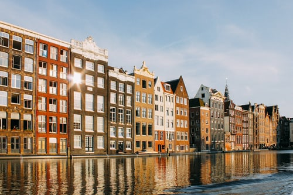
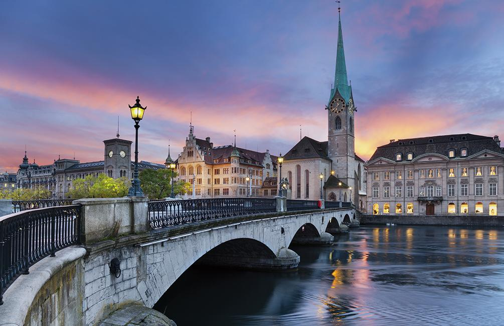

New York
New York est la destination parfaite pour un week-end pas cher et tendance. Shopping sur la 5ème Avenue, visite des plus célèbres musées du monde, virée chez les hipsters de Brooklyn ou dégustation de hot-dogs la tête en l’air au milieu des gratte-ciels, votre vol + hôtel vous offre la ville qui ne dort jamais dans toute sa démesure.
Amsterdam
Capitale des Pays-Bas, Amsterdam est une ville envoûtante. Ses musées, son histoire, sa beauté mais aussi son audace, en font une capitale culturelle de tout premier plan en Europe.
Zurich
Située au bord du lac de Zurich, le quatrième lac de Suisse en superficie, Zurich est un lieu de villégiature apprécié par la bourgeoisie suisse, allemande et autrichienne, notamment en raison de la beauté de sa vue et de son centre historique, ainsi que de la douceur de son climat.